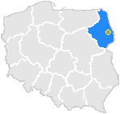

My name is Piotr. This is page all about me.
Tune of today would be This
It is a song called "Almost Honest" from the album "Cryptic Writings" by trash metal band Megadeth.
Fitting theme of the rest of the album, this song is rather calm. Trash melodies have been tuned down in favor of harmonics, which gives us the vibe of gentle hard rock.
As some might have noticed by now, music is one of my hobbies. Through most of my life I have developed a broad taste for music,
 from classic Rock, heavier metal and trash, through Rapcore, Hip hop and even Raegge.
from classic Rock, heavier metal and trash, through Rapcore, Hip hop and even Raegge.
Right now my taste in music is entirely dedicated by my mood: on easy, carefree days I'm enjoying light rock, when I'm upset I'm putting some heavier tunes or even black metal.
Partying with certain type of friends we are singing along to Raegge, and when I need to feel more motivated I'm focusing my attention on some Rap songs lyrics.
Another paragraph of Cheese Ipsum to see if text float around images properly. I love cheese, especially smelly cheese rubber cheese. Swiss cheeseburger brie halloumi bocconcini taleggio cheese slices say cheese. Blue castello chalk and cheese goat paneer halloumi bavarian bergkase brie dolcelatte. Pepper jack boursin macaroni cheese pecorino st. agur blue cheese fromage frais paneer boursin. Fromage frais cheese strings bocconcini blue castello cow babybel parmesan fondue. Ricotta ricotta mozzarella paneer the big cheese danish fontina everyone loves queso. Boursin cow say cheese when the cheese comes out everybody's happy stilton caerphilly cheese strings st. agur blue cheese. Ricotta cheese and biscuits bocconcini camembert de normandie cow cheese and biscuits fromage frais gouda. Camembert de normandie boursin parmesan squirty cheese cauliflower cheese cheese slices cheesy grin.
Here is a placeholder for another few paragraphs about my other hobby. Unfortunately, I don't consider myself exciting enough to have too many of those, or at least right now I can't think of anything I'm passionate enough to write about.
I have been born in city in eastern part of Poland named "Białystok". It was where i finished school called 'Secondary Middle School' with specialization in Web Developement. But then life happened, and before I noticed I was living in Scotland having 5 years of experience as a baker.